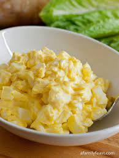

Egg Salad

Description
Egg salad, a simple yet delightful creation, harmonizes the creamy richness of hard-boiled eggs with the smooth embrace of mayonnaise and a hint of mustard.
Enhanced by the crunch of finely chopped celery and the freshness of chives, this classic dish is a versatile delight,
equally at home between slices of bread or as a flavorful stuffing for wraps.
Ingredients
- 6 hard-boiled eggs, peeled and chopped
- 1/4 cup mayonnaise
- 1 teaspoon Dijon mustard
- 1/4 cup finely chopped celery
- 2 tablespoons finely chopped fresh chives
- Salt and pepper to taste
Steps
- Start by hard-boiling the eggs. Place the eggs in a saucepan, cover them with water, and bring to a boil. Once boiling, reduce the heat to a simmer and cook for about 10 minutes. Then, cool the eggs, peel, and chop them.
- In a mixing bowl, combine the chopped hard-boiled eggs with mayonnaise and Dijon mustard. Stir until well combined, ensuring a creamy consistency.
- Add the finely chopped celery and fresh chives to the egg mixture. These ingredients contribute a satisfying crunch and a burst of freshness.
- Season the egg salad with salt and pepper to taste. Adjust the seasoning according to your preferences.
- Mix all the ingredients thoroughly, making sure the flavors are well incorporated.
- Refrigerate the egg salad for at least 30 minutes to allow the flavors to meld and enhance.
- Once chilled, serve the egg salad on its own, as a sandwich filling, or atop a bed of fresh greens. Enjoy the simplicity and deliciousness of homemade egg salad!